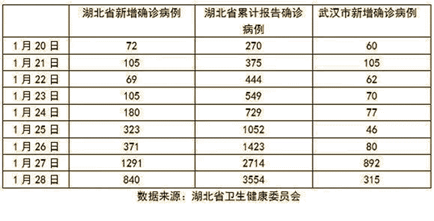
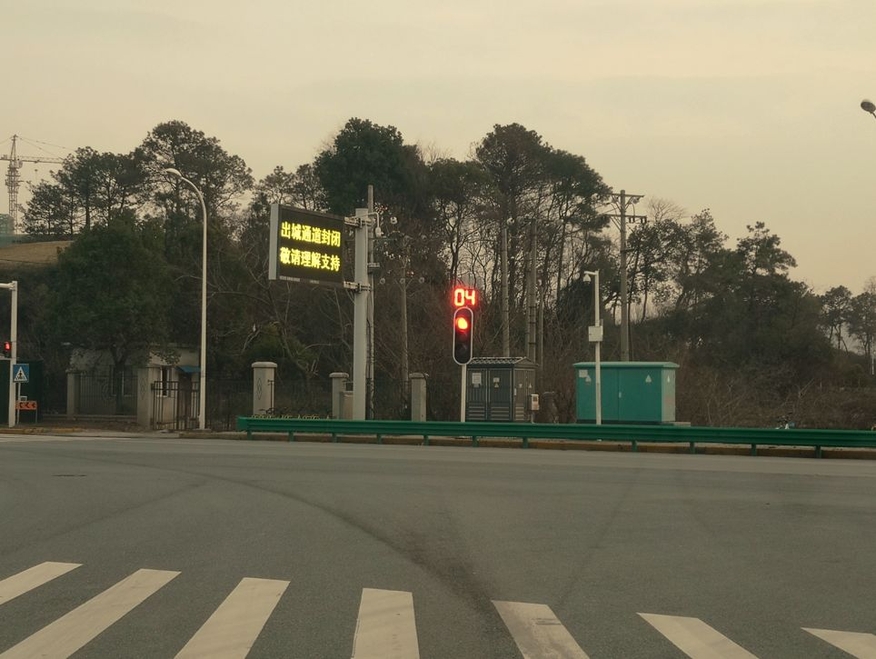
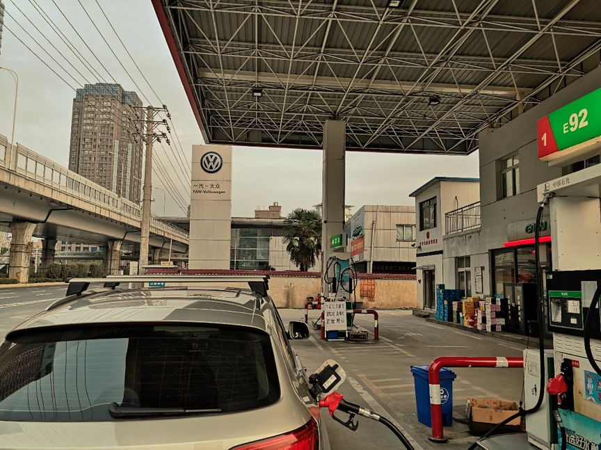
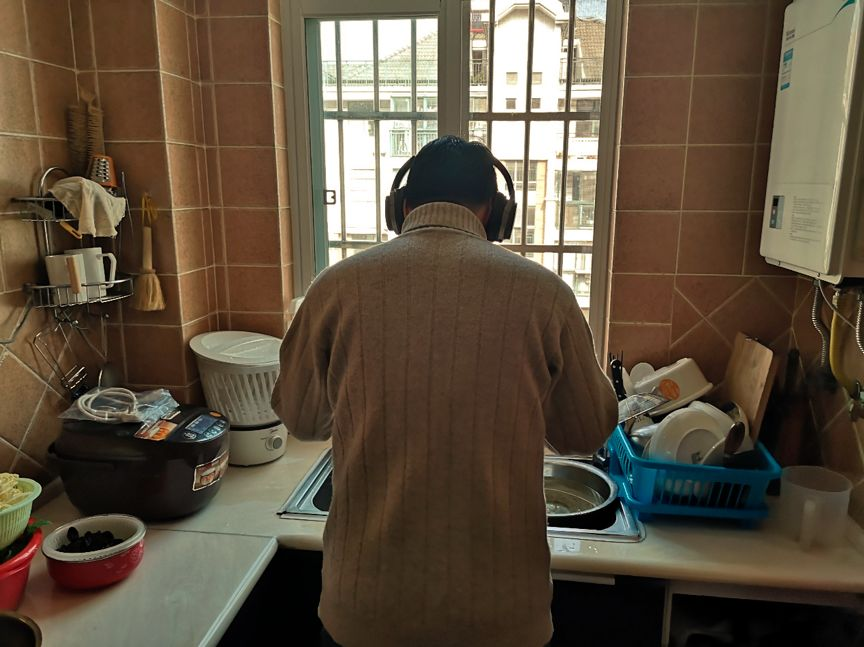
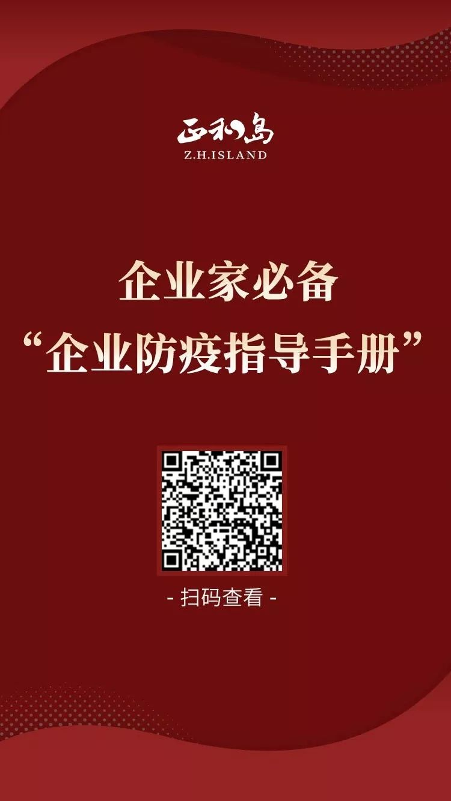

潜望丨小米驰援湖北 驰援武汉：一家公司如何组织救援“供应链”？
原文链接 备份链接 来源：腾讯新闻《潜望》 栏目 作者：王潘 2020年元旦前后，武汉新型肺炎的新闻曝光，小米区域拓展部副总裁、武汉总部总经理刘国俊要求团队尽快备好口罩、药物和体温测量仪等可能有助于武汉当地员工防御病毒的措施。 “原本小米 …

非常时期，武汉成了全国人民挂念、祈福的城市。封城后，武汉人民的真实生活是什么样？
正和岛自1月26日起特别推出《叶青：我在武汉疫区的第N天》专栏。叶青是一位定居武汉40年的市民，也是一名学者和官员。接下来的一段时间，他会用笔记录下亲身经历的、观察到的武汉，为此他还专门外出到大街上、到超市里，获得一手真实的信息。
这将是一份宝贵的史料。感谢他，我们得以更真切地感知到武汉疫情。让我们一起为武汉加油！
作 者：叶青 中南财经政法大学教授、博导 湖北省统计局副局长 正和岛蓝色岛邻
来 源：正和岛（ID：zhenghedao）
有了好转的数字
1月28日，正月初四，武汉阳光灿烂。
28日0-24时，31个省(区、市)报告新增确诊病例1459例，新增重症病例263例，新增死亡病例26例(湖北省25例、河南省1例)，新增治愈出院病例43例，新增疑似病例3248例(包括西藏1例)。
截至1月28日24时，国家卫生健康委收到31个省(区、市)累计报告确诊病例5974例，现有重症病例1239例，累计死亡病例132例，累计治愈出院103例。现有疑似病例9239例。

28日，武汉有了一个重大的转折，就是新增病例大幅度减少。这不能不说是管控有力的结果。

武汉的医疗力量大大增强
28日，孙春兰副总理率领中央指导组在湖北开展疫情防控指导工作。指导组连续召开会议听取湖北省疫情防控工作情况汇报，研究指导进一步做好疫情防控、病患救治、流行病学调查、宣传舆论引导等工作。可以想见，国务院对湖北武汉的指示一定会越来越结合武汉的实情。
我们最担心的医疗力量不足的问题，有所缓解。截至27日，共有30支医疗队，共4130位医护人员抵达湖北开展工作。28日还有13支医疗队，共1800人抵达。
截至到1月28日晚上，有近6000人来自全国各地的医疗队支援湖北的疫情防治工作。湖北武汉成为目前医疗力量最为充足的区域。这样，我们湖北人才能够放心。
我们的医护人员是最美的。
27日，武汉协和医院31名护士剪掉长发：方便穿防护服，照顾病人。
28日，一位“光头护士”的自拍照刷屏了社交媒体。不少人留言表达对其敬业精神和积极、勇敢个性的钦佩。
这位姑娘身着武汉大学人民医院东院区护士服，胸牌上显示她的名字叫单霞。29岁的她不仅是一位神经内科经验丰富的护士，还是两个孩子的妈妈。

我们常说，“春江水暖鸭先知”。其实，医生对疫情的反映是最敏感的。
中国青年报·冰点周刊发表文章《钟南山发话前，武汉这位医生向附近学校发出疫情警报》，说的是武汉市第五医院消化内科吕小红主任。
她在2019年12月25日就听说有医护人员疑似感染；
2020年1月2日，她建议本院设立发热门诊；
1月6日起，她所在的医院接到了很多疑似病例；
1月20日，她给附近高中的校长发去短信，让给原计划补课的高三学生放假；
……
因此，我建议今后应该建立一种制度，让医务人员及时报告一些可能的疫情线索。这也是我今天要提交的社情民意信息。
涌向武汉的爱如潮水
据《中国经济周刊》记者的不完全统计，截至1月28日上午，已有近200家企业紧急驰援，捐钱、捐物、上线疫情服务平台。目前累计捐赠金额超过50亿，捐助过亿的企业有20家。
阿里10亿、腾讯3亿、百度3亿、美团2亿、恒大2亿、招行2亿、吉利2亿，格力1亿、快手1亿、飞鹤1亿、碧桂园1亿、万科1亿、融创1.1亿、好未来1亿、携程1亿、伊利1亿、美的1亿、劲牌1亿，金光集团1亿。
其中，目前确认向武汉捐赠资金和物资的房地产企业约40家，累计捐赠金额接近9亿元。恒大、融创、碧桂园、万科捐赠金额共计5.1亿元，占目前房企捐赠总额的一半以上。
武汉校友企业融创中国是第一家宣布向武汉捐款的企业。23日晚，融创中国宣布向武汉市红十字会捐赠1000万元；25日，融创公益基金会再次宣布向武汉慈善总会捐助1亿元。
为了提高善款使用的透明度，让捐赠者放心，各级红十字会、慈善总会都尽快公布善款、善物的使用情况。
我是湖北省慈善总会的监事，对此特别关心。
截至27日18时，湖北省慈善总会共接收社会捐款4.08亿元。28日，这批捐赠款已全部转赠全省各地慈善总会。
比如，武汉市9000万元（含中国宝武钢铁集团有限公司定向捐赠3000万元），拨付武汉市慈善总会；
黄冈市6000万元，拨付黄冈市慈善总会……
湖北省慈善总会将与17个受赠市（州）慈善会签订《捐赠协议书》，明确资金使用进展情况反馈和使用完毕专项审计要求。同时，已确定每两天提出一次捐赠款分配方案。
开车听新闻一举两得
28日下午，我外出了一趟，再一次感受到人车稀少的武汉，难免让人心痛。但是，如果不尊重自然规律，不搞好环境卫生，这种场面在今后可能还会出现。

大家注意，显示屏上的12个字是“出城通道封闭，敬请理解支持”。此时此刻，到了“封城”的第六天，应该没有一个武汉人会反对吧。

路过加油站，空无一车，正好加个油。加油员说，腊月29，“封城”的第一天，加油的车排成车队，腊月30就少了。现在更少了，少的无事可做。

这个春节，让很多与出行、旅游、娱乐有关的行业大跳水。这也是没有办法的事情。
我的习惯是听着广播开车，了解第一手的资讯，避免浪费开车这一段时间。当然，技术差的不要学我。上班时，我6点30出门，半个小时到机关，下班要花一个小时到家。这样，我一天就有一个半小时听广播，及时了解经济信息。
我边开车，边看着无人的街道，边听央广新闻。
央广新闻里集中报道了武汉各大医院的情况，记者与医护人员的对话很生动。这比看微信的感觉好多了，眼睛不会那么难受。
这里顺便介绍一下我的“叶氏读书法”——三看三听。
三看：看纸质书、看电子书、看《财经早餐》（《经济日报》的微信公众号）。
三听：懒人听书、开车听央广新闻、各类读书会25分钟的“每天一本书”。
现在，我用“微信读书”比较多。这类读书软件可以看，可以听，还可以边看边听，让读书成为一种享受。还可以保护眼睛，眼睛累了就闭上眼睛听。因此，一本书连听带看，很快就会看完。
最近我听了《菊与刀》、《武士道》，还在听《日本人与日本论》，分别是美国人、日本人与中国人写的。之后我会听正和岛的书《本质》。
另外，我的包里始终放一本纸质书，有时开会内容重复，可以偷偷看看。有的领导讲完话，主持人还要啰嗦半天，正好可以看书。
曾国藩有一个成功经验是“读书不二”，即一本书没有读完，绝不读第二本书。现在，我建议“读书不三”，也就是最多只同时读两本书，并以其中的一本书为主。
我做菜的技术不行，但洗碗、拖地是我的强项。我会戴上大耳机，边听边洗碗，就像这样：


在线、远程终将成为一种习惯
武汉的大中小学什么时候开学？怎么上课？是许多家庭关心的问题。
武汉市教育局官网28日通知：
市属各级各类学校（含中小学、幼儿园、中职学校、市属高校和社会培训机构）2020年春季开学时间延期。从2月1日开始，将组织高三年级进行网上教学。2月10日开始，各区教育局组织辖区中小学、中职学校，按照教学计划安排，开展在线课程教学。
学校如此，企业也可以远程上班。
腾讯宣布，2月1日、2月3-7日启动在家办公机制，暂定2月10日（正月十七）返岗上班。
字节跳动建议中国大陆地区员工，2月9日（含）之前尽量留在当前所在地。目前不在工作地的员工，1月31日开始远程办公，2月10日至13日返回工作地，然后在家中隔离观察14天远程办公，确认无相关症状后前往办公室；针对延期返岗，在家里上班但没有电脑的员工可以申请，公司将快递IT库存电脑。
28日，百度向员工发布通知，2月3日-7日启动在家办公机制，暂定2月10日（正月十七）返岗上班。至此，BAT三家互联网巨头全部启动春节后在家办公机制。
我们一直倡导的在线教学、远程上班、远程医疗等，说不定在今年“新型肺炎”的推动下，会加快推广普及的步伐。我也只好这样自我安慰了。
**一个都不能少
**
昨天的文章《武汉疫区口述：别放过超市！》发了之后，有一位网友留言：建议超市增加交费口子。这是可以的，可以实行弹性窗口，人多就多增加收费员，多开收费口子。但是，我觉得更重要的是超市自助交费。我在超市时看到排队的人有一些，就改在自助交费区交费了。
推广超市自助缴费，是一个好建议。
昨天文章中说到，手套不能少。今天的相关内容特别多。
劳里·加勒特（Laurie Garrett）是美国著名女记者，是获得三大著名新闻奖（皮博迪奖、乔治·伯克奖和普利策奖）的第一人，现为美国对外关系委员会全球卫生高级研究员。她认为：手套比口罩更重要！
她说：出门离家时，戴上手套，冬天的手套或是户外手套都可以，任何公共场合包括地铁、公交都不要脱下来。
在某些需要脱下手套的社交场合，比如握手和吃饭时，不要用手接触你的脸或眼睛，不管有多痒都不要让你的手接触脸。再戴回手套前，用温水和肥皂仔细洗手，好好搓洗手指，再戴上手套。
看到这篇文章，我备受鼓舞。中国人的拱手礼是非常卫生的。
28日晚上，中国疾控中心副主任冯子健接受央视采访时表示，超市里买来的东西不需要消毒，超市里的物品被患者口沫污染几率不是很大。我们不可能对所有物品都进行消毒。相比手套、消毒，最重要的是勤洗手。
不论怎么表述，我们都要永远地记住：戴手套、戴口罩、勤洗手，这三件事一件都不能少，要成为中华民族永远的习惯。记得“非典”时代我们也是这样做的，但是随着时间的过去，我们逐渐忘却了。

**我们几家人
**
我们家的“师奶奶”又有新动作。一是不定时在微信群里发红包，几乎可以听到从天南海北的家庭里传来的欢笑声；二是让每个家庭同唱一首歌，然后再接在一起；三是拍各家的美食，但隔着屏幕，也只能让人可望而不可即。
我们经常提“社群”这个词。我觉得社群就是没有血缘关系、没有行政命令关系，而有共同语言、相似思维的人聚在一起的一群人。
师生关系就是这样的一个社群。
其实，我自从去年9月加入正和岛之后，发现企业中也有这种社群。比如，正和岛岛亲所创办的一书阁就是这样。
一书阁文化艺术学校于2004年创办，目前在北京、南昌、长沙、赣州、九江以及德国柏林等城市设有分校。截至2018年7月，教学基地达185个，在籍学员5万余名。
让人吃惊的不是这些，而是“企业一家人”的理念。
一书阁合伙人已经打造了一个企业家族，而不是家族企业，而且以后也是世世代代在一起，并确定了十六代子孙谱系：惟令德嘉，永昭光明。谦和立世，仁义弘道。
比如，董事长的女儿就叫“李惟清”。惟清，就是“惟”字辈阁宝宝。这也是没有血缘关系而胜似血缘关系的社群。
结语
在这个不一样的春节，阳光越来越明媚，气温越来越高，病毒也一定会越来越少。
在越来越强大的医疗力量面前，病人得到救治的把握越来越大，而人们的恐惧感会越来越低。
今天，武汉新感染人数减少；明天，应该是死亡人数减少。让我们祈祷！
多考虑让互联网嵌入人们的工作与生活，同时也希望良好的卫生习惯能够始终伴随着你。人人做好自己，国家才会强大。
当前疫情对企业的影响越来越大，正和岛整理出《企业防疫指导手册》，希望能在疫情之下给我们的企业家们多一份参考，从容面对疫情，降低企业风险。
识别下方海报二维码即可查看手册，欢迎把手册分享给更多企业家朋友，一起有方法、有准备地共度难关！


排版 | 一辛
审校 | 三三 主编 | 叶正新
原文链接 备份链接 来源：腾讯新闻《潜望》 栏目 作者：王潘 2020年元旦前后，武汉新型肺炎的新闻曝光，小米区域拓展部副总裁、武汉总部总经理刘国俊要求团队尽快备好口罩、药物和体温测量仪等可能有助于武汉当地员工防御病毒的措施。 “原本小米 …
原文链接 备份链接 非常时期，武汉成了全国人民挂念、祈福的城市。封城后，武汉人民的真实生活是什么样？ 正和岛自1月26日起特别推出《叶青：我在武汉疫区的第N天》专栏。叶青是一位定居武汉40年的市民，也是一名学者和官员。接下来的一段时间，他 …
原文链接 备份链接 几位口罩行业的从业者，都是在大量微信、电话疯狂轰炸的间歇，接受我们采访的。所有人的语速都异常急促——在过去的一周时间内，他们接过工信部、各地应急办、市级政府的电话；也接过各省医院、药店、大小代理商的电话；还有从未打过交 …
原文链接 备份链接 今天是“武汉日常”每日书的第四篇，在孝感的学生写到当地村民自发拦路封村，尽管道路后面的横幅还写着他们希望并且欢迎在外乡亲回家；有在黄石的编剧路过黄石最繁华的步行街，发现那里几乎没有任何动静；有居住在武汉市区自愿帮助陌生 …
原文链接 备份链接 非常时期，武汉成了全国人民挂念、祈福的城市。封城后，武汉人民的真实生活是什么样？ 正和岛自1月26日起特别推出《叶青：我在武汉疫区的第N天》专栏。叶青是一位定居武汉40年的市民，也是一名学者和官员。接下来的一段时间，他 …